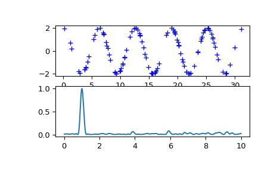

scipy.signal.lombscargle¶
-
scipy.signal.lombscargle(x, y, freqs)[source]¶ Computes the Lomb-Scargle periodogram.
The Lomb-Scargle periodogram was developed by Lomb [1] and further extended by Scargle [2] to find, and test the significance of weak periodic signals with uneven temporal sampling.
When normalize is False (default) the computed periodogram is unnormalized, it takes the value
(A**2) * N/4for a harmonic signal with amplitude A for sufficiently large N.When normalize is True the computed periodogram is normalized by the residuals of the data around a constant reference model (at zero).
Input arrays should be 1-D and will be cast to float64.
- Parameters
- xarray_like
Sample times.
- yarray_like
Measurement values.
- freqsarray_like
Angular frequencies for output periodogram.
- precenterbool, optional
Pre-center amplitudes by subtracting the mean.
- normalizebool, optional
Compute normalized periodogram.
- Returns
- pgramarray_like
Lomb-Scargle periodogram.
- Raises
- ValueError
If the input arrays x and y do not have the same shape.
See also
istftInverse Short Time Fourier Transform
check_COLACheck whether the Constant OverLap Add (COLA) constraint is met
welchPower spectral density by Welch’s method
spectrogramSpectrogram by Welch’s method
csdCross spectral density by Welch’s method
Notes
This subroutine calculates the periodogram using a slightly modified algorithm due to Townsend [3] which allows the periodogram to be calculated using only a single pass through the input arrays for each frequency.
The algorithm running time scales roughly as O(x * freqs) or O(N^2) for a large number of samples and frequencies.
References
- 1
N.R. Lomb “Least-squares frequency analysis of unequally spaced data”, Astrophysics and Space Science, vol 39, pp. 447-462, 1976
- 2
J.D. Scargle “Studies in astronomical time series analysis. II - Statistical aspects of spectral analysis of unevenly spaced data”, The Astrophysical Journal, vol 263, pp. 835-853, 1982
- 3
R.H.D. Townsend, “Fast calculation of the Lomb-Scargle periodogram using graphics processing units.”, The Astrophysical Journal Supplement Series, vol 191, pp. 247-253, 2010
Examples
>>> import matplotlib.pyplot as plt
First define some input parameters for the signal:
>>> A = 2. >>> w = 1. >>> phi = 0.5 * np.pi >>> nin = 1000 >>> nout = 100000 >>> frac_points = 0.9 # Fraction of points to select
Randomly select a fraction of an array with timesteps:
>>> r = np.random.rand(nin) >>> x = np.linspace(0.01, 10*np.pi, nin) >>> x = x[r >= frac_points]
Plot a sine wave for the selected times:
>>> y = A * np.sin(w*x+phi)
Define the array of frequencies for which to compute the periodogram:
>>> f = np.linspace(0.01, 10, nout)
Calculate Lomb-Scargle periodogram:
>>> import scipy.signal as signal >>> pgram = signal.lombscargle(x, y, f, normalize=True)
Now make a plot of the input data:
>>> plt.subplot(2, 1, 1) >>> plt.plot(x, y, 'b+')
Then plot the normalized periodogram:
>>> plt.subplot(2, 1, 2) >>> plt.plot(f, pgram) >>> plt.show()
